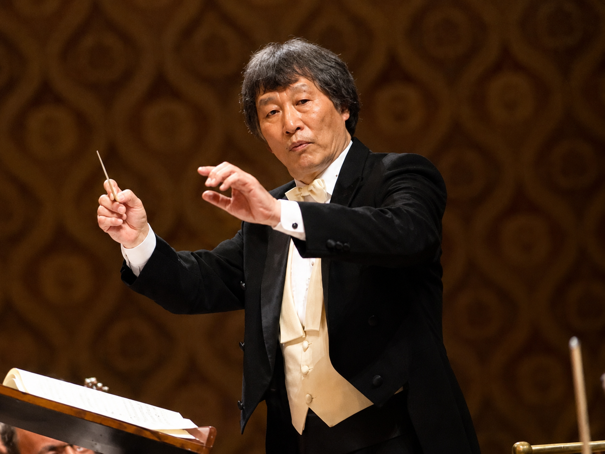

Instructor

Oratorium Maestro
Biography
목포중·고등학교를 졸업한 최영철 감독은 목포교육대학교와 한양대학교(관현악과) 및 동 대학원(음악학)을 마친 뒤 미국으로 건너가 Robert Shaw에게 합창 지휘를 사사했습니다. 이후 거장 Miltiades Caridis로부터 오라토리오를 도제 수업으로 익혔고, 오스트리아 빈 국립 음대에서 오케스트라·오페라 지휘를 전공했습니다.
오라토리움 음악에 뜻을 세운 그는 1991년부터 서울오라토리오 합창단과 오케스트라, 드보르작 아카데미를 차례로 설립하여 상임 지휘자이자 감독으로 이끌어오고 있습니다. 서울오라토리오와 함께 오라토리움 음악을 중심으로 한 꾸준한 연주 활동은 물론, 문화예술·교육 교류, 이론과 실제를 겸비한 전문 연주자 양성, 전 세계 음악 인재 발굴, 한국 전통음악의 세계화, 음악이론의 체계화를 이루어 왔습니다. 상업성을 배제한 순수음악 정신을 지켜온 그는 현존하는 세계 유일의 '오라토리움 마에스트로'로 불립니다.
1996년부터 해외 음악가의 한국 초청연주와 대한민국 음악가의 해외연주를 주관해 온 그는, 2005년 드보르작 아카데미와 200년 전통의 체코 프라하 음악원 간 정규 계절학기 협력과정을 체결하여 현재까지 21학기의 교육 교류를 이어오고 있습니다. 유럽과의 문화·연주·교육 교류에 앞장서 온 공로로 체코 정부로부터 '실버메달'과 문화외교 최고 영예인 'Gratias Agit'상을 받았으며, 안토닌 드보르작 3세는 그를 작곡가의 위업을 계승할 후계자로 요청하고 드보르작 흉상, 교향곡 9번 <신세계로부터> 초판본과 여러 기악 악보, 작곡가의 친필 서신을 기증했습니다. 체코 드보르작 협회는 그를 영예회원으로 위촉했습니다.
지난 39년간 '음악의 원리와 원칙'을 밝히기 위해 연구해 온 그는 음악의 구성 원리를 총괄하는 학문인 대위법과 화성학을 체계적으로 정리한 저술로 결실을 거두었으며, 서양음악 양식을 역사상 최초로 과학·체계적으로 정리한 음악학자로 세계의 주목을 받고 있습니다. 2010년에는 '국제 안토닌 드보르작 작곡콩쿨'을 설립해 2023년 제11회 대회까지 성공적으로 이끌었고, 2007년부터는 '국제 안토닌 드보르작 성악콩쿨'의 심사위원 및 집행위원으로도 활동하며 젊은 성악가들의 유럽 오페라 데뷔와 국내 초청공연을 주관하고 있습니다.
우리 향토음악, 특히 남도음악을 중심으로 전통음악의 우수성과 세계화 가능성을 연구해 온 그는 서양음악 대위법을 통해 우리 전통음악의 잠재력을 검증하고 동서양 음악문화 융합이론의 기틀을 마련했습니다. 거문도 뱃노래, 해남 강강술래, 진도 씻김굿, 진도아리랑, 무안 품바, 판소리 등 문화유산을 지닌 지자체와 전문가들이 그에게 자문을 구하고 있으며, 모교인 목포고등학교는 2008년 '자랑스런 목중고인상'을 수여하고 역사관에 그의 업적을 전시했습니다.
작곡가, 성악가, 기악 연주가들을 직접 지도해 온 그는 독창회·독주회·오케스트라 및 합창단 협연·창작 발표회·앙상블 음악회 등을 통해 이들을 전문 예술가로 성장시키고 있습니다. 그의 가르침을 받은 많은 이들이 국내외에서 독창자, 독주자, 오케스트라 악장과 수석 연주자, 실내악 및 솔리스트 앙상블 연주자, 전문 반주자, 오르가니스트, 작곡가, 지휘자, 연구원, 교수 등 전문 음악가로 활동하고 있습니다.
국경과 민족을 뛰어넘은 이러한 업적은 세계 음악계에서도 유래를 찾기 힘든 기념비로 평가받습니다. 그럼에도 그는 자신의 이름을 알리기보다 '음악의 역사를 이끌어온 위대한 작곡가들이 진심으로 존경받기를 원한다'고 말합니다. 최영철 감독은 늘 음악의 본질을 숭상하며, 자신의 명성보다 위대한 작곡가들의 음악 이상과 업적을 알리는 데 힘쓰고, 오라토리움 음악의 대중화와 정통음악의 저변 확대를 위해 지금도 최선을 다하고 있습니다.
Highlights
Publications
Testimonials
마에스트로 Choi는 인류의 음악을 구해낼 메시아와 같은 분입니다. 그의 위대한 저술서 대위법은 21세기 음악의 발전 방향을 잃은 우리에게 음악의 본질과 원리를 깨우쳐 주고 있습니다.
JAN KRÁLIK · 전 찰스대학교 교수(체코), 음악학자
이러한 시대에 출판된 최영철 감독의 대위법은 음악사의 새로운 이정표를 세웠으며, 음악을 공부하려는 모든 세계인에게 가장 귀중한 교재와 참고서적으로 사랑받으리라 믿는다.
故 박영근 · 전 한양대학교 음악대학 작곡과 명예교수, 작곡가